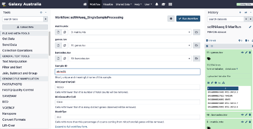
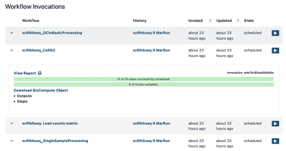
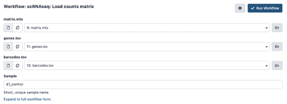
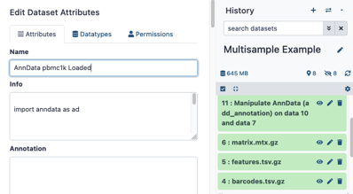
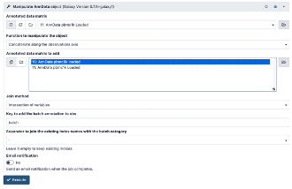
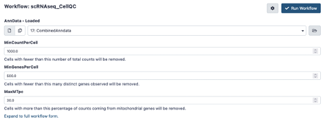
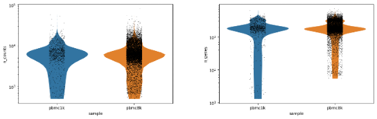
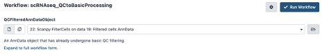
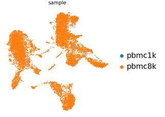

This document describes how to use some scanpy-based scRNAseq workflows on galaxy Australia.
The aim of these workflows is to handle the routine ‘boring’ part of single cell RNAseq data processing. It will produces an ‘AnnData’ object, which can then be used as a base for downstream analysis – either within galaxy or outside of it. AnnData is a standard format used by the ‘scanpy’ python package.
These workflows represent just one way of processing data for a ‘typical’ scRNAseq experiment – there are many other options!
This document describes 3 sub-workflows for processing single cell RNAseq data with scanpy
For single sample experiments, there is a streamlined workflow that runs all 3 sub-workflows all at once
These workflows are all available on galaxy australia.
When run in full, these workflows produce the following main outputs
When there is only a single biological sample in a study, there is a streamlined workflow.

This pipeline should take a [few minutes/few hours] to run.
Return to galaxy, and look up the run, or invocation, of this workflow:
User Menu > Workflow Invocations
This brings up the history of workflow invocations. This particular workflow runs a number of sub-workflows. The Cell QC and QC to Basic Processing subworkflows produce reports, which can be viewed shared and saved.

With multi-sample experiments, each sample is loaded independently and then combined. The overall method is the same, but the QC and processing steps are run separately.


**IF USING the 3 file input, describe how to change barcodes.tsv to tabular, and note that features == genes, and that .tsv.gz will work fine. **
This part of the workflow will load the counts matrix into an anndata object, and then adds an extra column in the metadata called ‘sample’. This means the sample information can be tracked when multiple samples are combined.
The AnnData object that it produces in your history will probably be named something like ‘Manipulate AnnData (add_annotation) on data 20 and data 17’. You may choose to rename this object via the ‘edit attributes’ option in the history panel, so its easier to find later.

In the same history, repeat for all other samples.
Next, join all samples with the ‘Manipulate AnnData object’ Tool (search on the tools pane on the left).
This tool can do several different operations – listed under ‘Function to manipulate the object’, but we want the default; “Concatenate along the observation axis”. This combines cells (observations) from multiple sample runs.
Choose the AnnData object of one of your samples in the ‘Annotated data matrix’ dropdown. Then, choose the rest of your samples under ‘Annotated matrix to add’. Use ctrl-select / option-select to highlight multiple samples.
Note: Be careful not to select the sample in the ‘Annotated data matrix’ dropdown again – else it will be joined to itself! In this example there is only two samples, so only pbmc8k is selected to be added to pbmc1k.

A combined anndata object will created in your history.
This workflow plots some basic cell-level QC thresholds, and applies the QC thresholds to produce a filtered Anndata object.

You’ll notice you can see each sample plotted separately in the QC plots. You may elect to rerun with tweaked thresholds (e.g. higher minimum counts threshold) once you've seen this output.


The first umap now shows the different samples that make up the data.

The AnnData object generated is ready for analysis! Options include
Note that there are toolkits other than scanpy (e.g. Seurat, SingleCellExperiment objects) which may not be directly compatible without conversions.
For more general information about single cell RNAseq processing on galaxy; there are some excellent tutorials to be found here on the galaxy training website scRNA section. The workflow implemented here is heavily influenced by the Clustering 3kPBMCs with Scanpy tutorial
More general information on using galaxy can be found on the galaxy training website
There are many general resources online about the princials of single cell analysis. The Scanpy preprocessing and clustering tutorial may be of particular use becuase it describes the scanpy methods used in this workflow. Even if you don't use the python code, it works through and explains many of the plots these workflows generate.
The workflow implemented here is heavily influenced by the Clustering 3kPBMCs with Scanpy tutorial